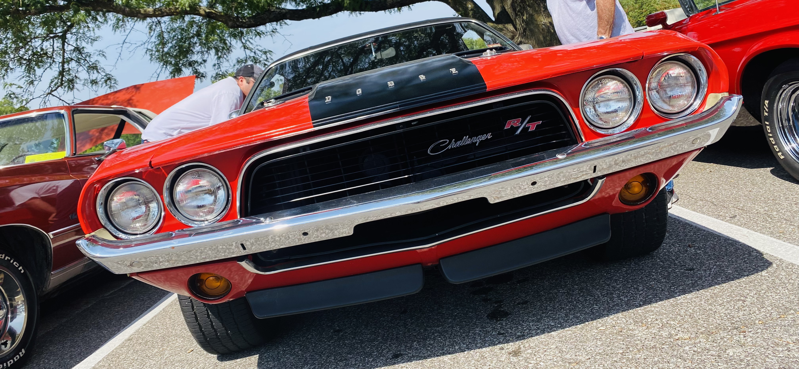

Image by: Blake Meyer on Unsplash
Image by: Blake Meyer on Unsplash
The Audi R8 is one of the most favored cars by the Audi community and is sadly being discontinued this year (2024). First announced in 2006 this car has had multiple versions including the Coupé, Spyder, GT, and the very rare Audi R8 e-tron. After its 17-year run, the company has decided to stop production to meet its goals to become an all-electric company.
 Image by: The Drivers Dream
Image by: The Drivers Dream
Although technically not being discontinued this year the F8 does deserve to be on the favorite list. The Ferarri F8 Is the great successor to the 488 and has had a short production time spanning only 4 years (2019-2023). Two main medals were made of the F8 including the Tributo and Spider. The spider had a folding hard top that would be amazing for sunny drives. This car will not have a direct successor itself.

Image by: The Drivers Dream
Dodge will be ending the Challenger this year (2024) as they also move towards expanding their electric lineup of cars. This Beast of a car has been on the roads since 1970 and is an iconic American muscle car. With three generations this can has gotten many makeovers but now it has come to an end with the company's “Last Call” special series.
Image by: Phuc Hoang from Pixabay
Along with the Dodge Challenger being discontinued, the Dodge charger is also being discontinued this year (2024). This is also attributed to the company's goal of expanding its electric lineup. The Charger originally released in 2006 has been known for its sheer power combined with a sleek modern style. All Hellcat models have also been discontinued after 2023.
Image by: The Drivers Dream
The Chevrolet Camaro will be ending this year. Wait is that right? Not quite. The Camero as we know it will be ending this year (2024). GM has the goal to be completely electric by the year 2035, and to help reach this goal they are phasing out the gas-powered Camero with a new EV Camero which is to come between 2026-2027.